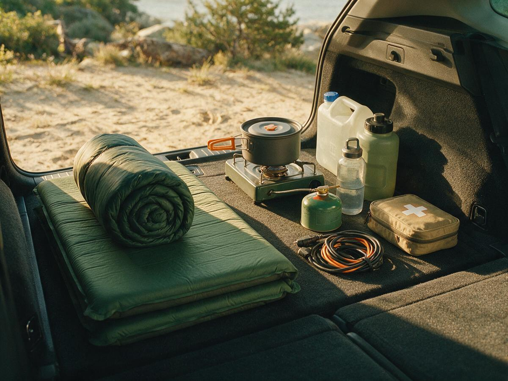
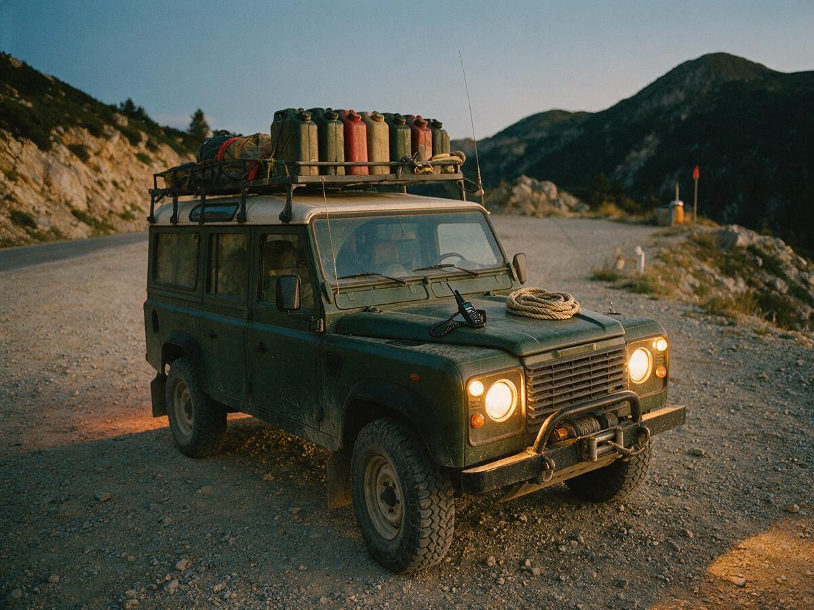
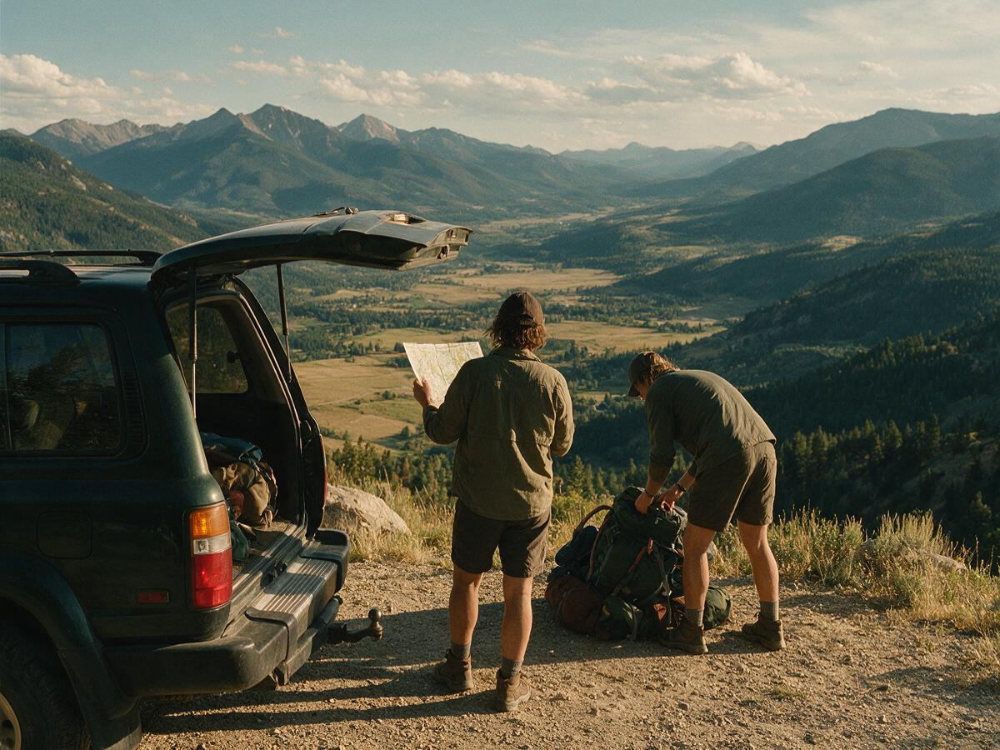
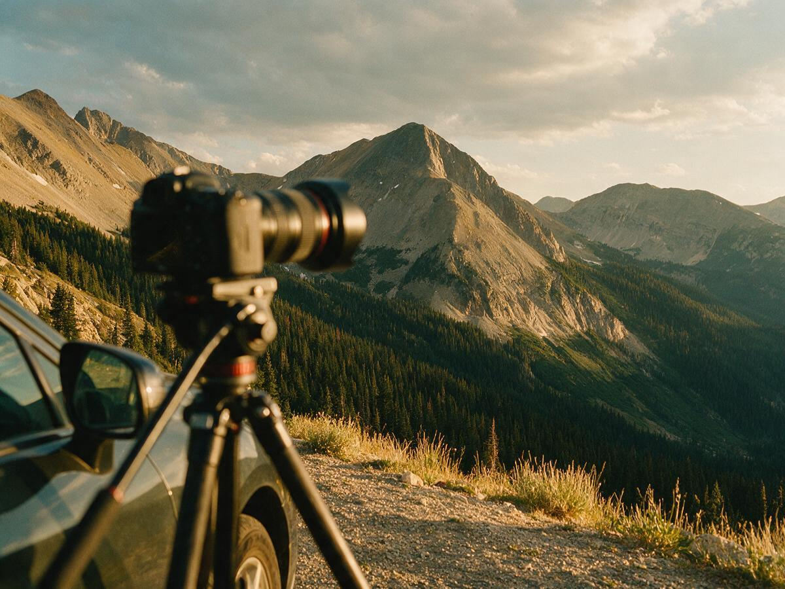

六项服务，可单选，也可串成一次完整旅程
每项服务都有明确的交付物、交付时限与验收标准。 你可以只买一份路线策划，也可以把路线、物资、后勤、随队与内容全部交给我们。
路线策划服务
客户画像：想自驾但没时间做攻略的人；已有车、想自己开的人； 企业组织考察型活动需要的路线与后勤设计。
交付物
- 《定制路书》：逐日行程表——里程、车程、海拔、路况、加油点、住宿点、必拍点、风险提示、备选方案
- 《补给地图》：加油站点编号、位置、营业时间、可靠性评分；充电桩位置与功率；沿途超市与维修点
- 《摄影机位手册》：每个必拍点的最佳到达时间、光线方向、构图建议、参考参数
- 《风险与应急手册》：每段路的风险点、撤离路线、最近医院（名称 / 距离 / 电话 / 导航坐标）、最近可住宿点
- 《车辆改装与空间规划图》：基于客户车型（含纯电轿车续航痛点）的载物布局图与找平方案
服务边界
路线策划服务不包含代驾、不包含车辆、不包含导游。 若你需要执行，我们把它导向"后勤保障"与"随队服务"。 这是我们刻意的分层设计：把"咨询"和"履约"分开定价， 你只买需要的部分，不必为不需要的部分付费。
交付流程
需求诊断
30 分钟结构化问卷（人数 / 车 / 天数 / 预算 / 驾驶经验 / 体力 / 住宿偏好 / 影像需求）。
可行性判定
3 个工作日。路况、季节窗口、许可与通行证、车辆能力匹配。不可行会明确告知并给替代方案。
A / B 双方案
7 个工作日。一版风景强度优先，一版车程与成本优先。
线上讲解
60 分钟逐日过行程、风险点与装备方案，当场改稿。
定稿交付
第 14 天交付全套电子手册 + 纸质路书（防水印刷装订）。
行前说明会
第 2 天，30 分钟录屏留档。
物资与装备方案

这是我们的核心差异化产品。它直接来自一次 15,000 公里、两人一车、 全程不住酒店的西藏大环线记录——把那套"能把所有东西装下车还能保持纯平大床"的方法， 变成可复制、可培训、可验证的工程规范。
物资清单八类结构
| 类别 | 核心项 | 关键参数 |
|---|---|---|
| 食品饮水 | 主食、肉制品、蔬菜、蛋奶、罐头、调味、饮用水 | 人日 2,800–3,500 kcal + 20% 余量；高原每人每日额外 2–3 L |
| 炊具 | 电饭煲、电热锅、空气炸锅、烧水壶、保温壶、锅碗、刀具 | 按海拔分级，见下方实测表 |
| 洗漱卫生 | 洗澡帐篷、折叠水桶 ×2、花洒、热得快、洗漱用品、水袋、洗衣液 | 洗澡水 8–12 L/人次；高原水温 ≥ 38 °C |
| 睡眠 | 折叠床垫、被子、毛毯、乳胶枕、隐私窗帘 | 睡车找平方案见下 |
| 衣物鞋履 | 冬季衣物、每人 3 双鞋（1 靴 + 2 洞洞鞋）、手套、面罩、墨镜 | 鞋多反而穿不过来，3 双是实测结论 |
| 车载收纳 | 大收纳箱、折叠桌 / 椅、天幕、露营灯、储物盒、垃圾袋 | 按车型出空间布局图 |
| 车辆应急 | 防滑链、拖车绳 / 钩、补胎工具、充气泵、清石钩、搭电应急电源、三角警示牌、灭火器 | 每车必备，不可省 |
| 高原健康 | 制氧剂 / 氧气瓶、加湿器、护手霜、润唇膏、鼻腔喷雾、防晒 SPF50+、葡萄糖、布洛芬 | 见运营体系的高原医疗 SOP |
载物三原则与校验三问
载物三原则
- 重物靠前靠低，影响重心与刹车距离
- 常用件随手可取：做饭全套集中在后备箱主区
- 缝隙即仓库：门缝、座椅抽屉、中岛位、冰箱
每次装车必答三问
- 放倒后排座椅后，是否压到任何物品？
- 后视镜与座椅视野是否受阻？
- 装满后重心是否仍在安全区间？
睡车找平方案
测量凹坑
放倒后排，量深度与尺寸；深度超过 3 cm 必须找平。
柔性填充
用备用鞋垫、暖宝宝、折叠毛巾等可压缩材料填平。
铺 3 折床垫
展开后总长 ≥ 190 cm、宽 ≥ 120 cm，取物时整片翻起。
装隐私帘
磁吸或吸盘固定，透光材质，兼顾隐私与通风。
保留驾驶位
前排座椅保持正常驾驶坐姿，不为床铺牺牲驾驶视野。
高原炊具适配表 （实测进行中）
| 器具 | 2,000 m | 3,500 m | 4,500 m | 备注 |
|---|---|---|---|---|
| 电饭煲（1.5 L） | 实测中 | 实测中 | 实测中 | 记录耗时与夹生比例 |
| 电热锅（2 L） | 实测中 | 实测中 | 实测中 | 记录沸腾时间 |
| 空气炸锅 | 实测中 | 实测中 | 实测中 | 记录预热时间 |
| 烧水壶 | 实测中 | 实测中 | 实测中 | 记录沸腾时间 |
| 燃气卡式炉 | 实测中 | 实测中 | 实测中 | 高原明火受限，低温启动困难 |
案例中的原话是"也不知道高原地区能不能煮熟饭啊，到时候就知道了"—— 这正是一个专业方案公司与个人博主的分界线：我们把它测出来，写进交付物。
纯电车自驾专项
- 能耗预算：总里程 ÷ 实测平均续航 × 1.3 安全系数，预留补能点
- 补能点密度：无人区与高海拔段每 120–150 km 必须有 1 个可用充电点，否则该段不纳入产品
- 衰减系数：高原初期按 −25%、冬季按 −20% 保守估计
- 备胎：纯电车常配补胎液或无备胎，必须配备充气泵 + 补胎工具 + 搭电应急电源
- 低电量预案：每段预留一个下撤点，电量低于 25% 前必须已抵达可补能或可等待救援的点位
后勤保障服务

客户画像：最怕"车坏在无人区""半夜找不到医院""油不够了"的客户。 这一项对应你心里最不安的那部分——把它交出去，你就能安心看风景。
保障模块与承诺
| 模块 | 承诺 | SLA |
|---|---|---|
| 救援网络 | 签约全国拖车 / 换胎 / 送油 / 搭电 | 24h 热线；山区 ≤ 4h 响应 |
| 医疗点清单 | 每条线路最近的 5 家医院（等级 / 距离 / 电话 / 导航坐标） | 出发前交付 |
| 补给站白名单 | 加油 / 充电 / 超市 / 维修点 4 类，每类 ≥ 8 个点 | 出发前交付 |
| 通信保障 | 卫星电话租赁（无信号路段）+ 本地 SIM + 离线地图 | 出发前配置 |
| 通信与定位 | 行车轨迹记录，客服可实时查看（经客户授权） | 实时 |
| 应急调度 | 24 小时值班调度台 | 24h |
| 车辆备援 | 每条线路配置 1 台备用车 + 租车公司白名单 | 4h 内到位 |
| 费用垫付 | 救援与医疗费用公司先行垫付，后与保险结算 | 48h 内结案 |
救援事件处置顺序
人员先撤离
不在高速、悬崖边停车。所有人先到安全位置。
联系值班台
值班台同步联系外部救援、保险公司与租车白名单。
通知家属与公司
客服统一口径对外沟通，避免多头回复造成混乱。
启用备用车
等待期间安排住宿、餐食与替代活动，不让客户干等。
事件记录与结算
完整记录与费用清单，48 小时内完成垫付与理赔对接。
事件分级：P1 重大（人身伤亡、多人受伤）→ 立即报警、启动公司应急组、 2 小时内上报 CEO 与保险；P2 较大（车辆故障、需就医、行程中断）→ 当日事件报告； P3 一般（延误、轻微剐蹭、客诉）→ 周会复盘。
随队服务

客户画像：有车但没时间、没经验、没人搭把手；想有人陪的家庭； 需要有人一起完成长途的内容创作者。
服务内容
- 专业领队随行：持领队证或领队经验 ≥ 3 年，按四级认证体系派单
- 领队负责：路线执行、物资管理、车辆巡检、摄影记录、安全值守、每日简报
- 后勤车随行：每 2 台游客车配 1 台后勤车，载水、燃料、备件、炊具与救援器材
- 每日平安确认：20:00 前到群确认 + 客服登记，未回应 15 分钟电话确认
- 氛围运营：团友群每日一图、一段路书语音
领队每日职责
出发前
- 复核天气阈值与备选方案
- 逐人核对名单、证件、保险
- 车辆检查表逐项签字
- 物资按空间布局图装箱复核
- 卫星电话测试、离线地图下载
途中与到达后
- 每 2 小时休息 15 分钟
- 领航车与尾车每 30–60 分钟对讲确认
- 记录里程、油耗、路况异常、补给点
- 拍摄必拍点，垃圾全部带走
- 20:00 前平安确认 + 次日天气复核
领队禁则
- 禁止酒驾、疲劳驾驶、药物影响下驾驶
- 禁止为赶进度压缩休息时间超过 30%
- 禁止在阈值触发时以客户意愿推翻决定
- 禁止在无信号区单独让客户离开车辆
- 禁止将客户车辆开往未核实路况的路段
- 禁止接受客户行程中的私下收费项目
- 禁止删除或修改事故记录
- 禁止在无人区、水源地、非指定点排污或洗车
- 禁止用"没问题"代替阈值核对
内容共创

案例本身就是"边开边剪"——无人机、iPad、笔记本、折叠桌都随车出发。 内容共创把这套工作流产品化，服务自媒体、博主、品牌市场部与想记录旅程的人。
服务内容
- 随队摄影 / 摄像：可选专职或兼职摄影，跟队执行
- 机位执行：按《摄影机位手册》逐点到位，不让客户跑冤枉路
- 日更交付：当日素材当晚交付，当天剪辑
- 直播与短视频代运营：拍摄指导 + 剪辑 + 发布排期
- 联合出品与授权分成：我方拍摄客户使用，或联合出品按约定分成
每团内容交付标准
| 交付物 | 数量 | 格式 |
|---|---|---|
| 精修成片 | ≥ 60 张 | JPG，统一调色预设 |
| 短视频 | ≥ 3 支 | 15–60 秒竖版 + 1 支横版 |
| 本片合集 | 1 支 | 3–5 分钟横版，含线路节奏与机位标注 |
| 拍摄机位笔记 | 1 份 | 图文，含参数与到场时间 |
| 客户专属相册 | 1 个 | 在线相册，可授权公开 |
成片默认带品牌水印；客户可申请无水印版本，但需授权公司使用该素材二次传播（合同中以勾选条款呈现，默认勾选"同意公司使用"）。
企业与品牌定制

把我们的后勤工程能力开放给需要它的人： 汽车品牌要做极限测试，户外品牌要做野外实测，文旅局要内容采风，企业要做高管考察。
场景与预算
| 客群 | 场景 | 交付 | 预算区间 |
|---|---|---|---|
| 汽车品牌 | 新车首发、长途极限测试 | 车队 + 领航车 + 专业后勤 + 内容 | 30–150 万元 / 项目 |
| 户外 / 装备品牌 | 产品野外实测 | 路线设计 + 执行 + 内容 | 20–80 万元 / 项目 |
| 摄影器材品牌 | 主题拍摄团 | 路线 + 摄影师 + 后期 | 15–60 万元 / 项目 |
| 企业团建 / 高管考察 | 团队活动 | 全程包车 + 领队 + 后勤 + 餐饮 + 会议 | 3,000–15 万元 / 团 |
| 政府 / 文旅局 | 目的地内容采风 | 线路 + 内容生产 + 素材授权 | 面议 |
B2B 地面执行服务
为国际旅行社、海外华人旅行机构与品牌方提供中国段的地面接待： 我们提供线路能力、接待标准、领队与供应商执行， 报价模型为「地面成本 + 服务费 12–15% + 风险准备金 3%」。
双合同、双保险、双 SOP：B2B 客户需要我们同时满足自己面对消费者的交付标准， 与 B2B 伙伴的接待标准。这是我们对合作方最重要的承诺。
项目执行流程
需求共创
明确目标：产品验证、内容传播、品牌形象还是团队建设。
可行性
预算、时间窗口与安全边界三方校验，任一不满足即调整方案。
方案与报价
含技术方案（车辆改装 / 摄影 / 供电 / 通信）与变更条款。
试运行
小规模走一遍，验证流程再放大。
正式执行与交付
内容交付 + 服务报告 + 复盘 + 年度框架合作洽谈。
四种服务等级
按你需要的确定性程度选择，不必为不需要的部分付费。
| 等级 | 包含内容 | 交付时效 | 适用 |
|---|---|---|---|
| 基础版 | 路书 + 补给点 + 医疗点清单 + 救援白名单 | T-14 | 自主客户 |
| 标准版 | 基础版 + 物资清单 + 空间布局图 + 装备租赁 | T-10 | 自主客户 |
| 全包版 | 标准版 + 后勤车 + 随队领队 + 24h 调度 + 卫星通信 | T-7 | 跟队客户 |
| 定制版 | 全包版 + 专属顾问 + 内容共创 + 定制路线 | T-21 | VIP / 企业 |